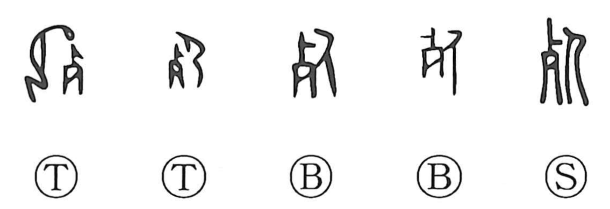

死

Kun: shinu | On: shi
death ・ to die
Explanation
A compound graph combining 歹 and 人/匕. In early forms, 歹 was written as 肖, a depiction of the remaining upper bones of a corpse. In ancient practice, bodies were first left in the brush; once the flesh had withered, the bones were gathered and buried—this is the original sense of 葬, and the later “double funeral” (複葬) reflects that rite. The character shows a person bowed in reverent mourning before the collected, abandoned bones, and from this funerary scene it came to mean death and to die.